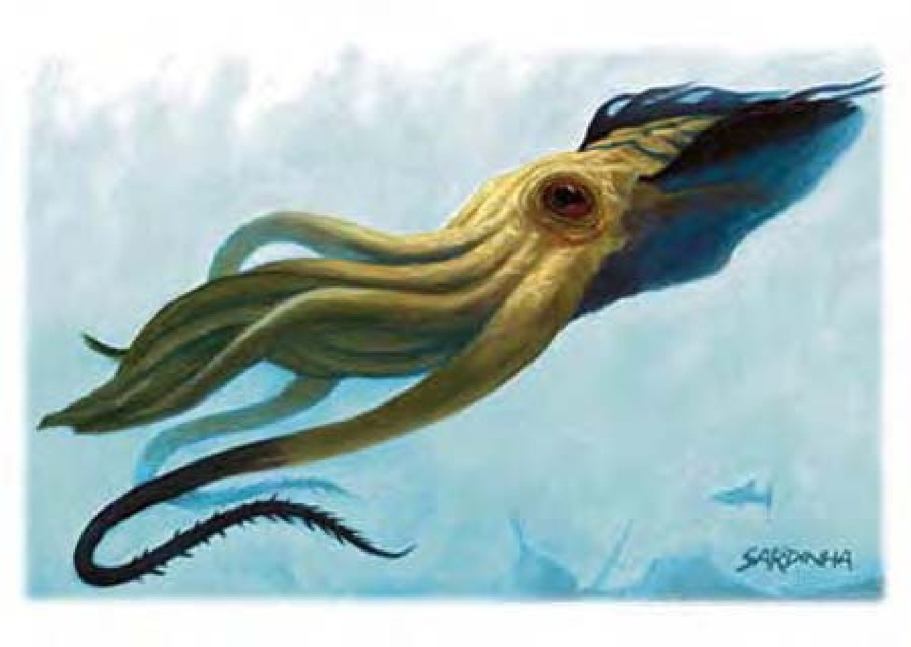

这种生物看起来像一只巨大的乌贼，有着流线型的身体、两只大眼与许多的触手。身体约有30英尺长，全身被一层厚实的肌肉保护着。
深海乌贼凶猛、残酷且具有高度智慧，他是海底的统治者。虽然很少看到这些巨兽出现在海面上，但传说中曾有船只被他们拖入海底或整个小岛被袭卷一空。
深海乌贼的巢穴在海面数千英尺之下。他们通常住在复杂的巨大洞穴中，里面还有一些有空气的小室，深海乌贼在此处囚禁、饲养人形生物作为奴隶，来侍奉他或填饱他的肚子。
这种生物有六只较短的手臂，约30英尺，剩下两只较长的触手有60英尺且布满倒刺。他喙般的嘴位于触手与下段身体的交接处。
深海乌贼通晓通用语与水族语。
深海乌贼会用带刺的触手攻击敌人，接着再用手臂擒抱压碎或把他拉到自己巨大的嘴边。深海乌贼的触手视为武器，可尝试以「击破武器」攻击，触手有20HP，手臂10HP。若深海乌贼正用一只触手或手臂抓住目标，通常会用另一只 (触手或手臂) 来进行借机攻击以对抗「击破武器」。砍断深海乌贼的触手或手臂将对乌贼本体造成相当于该肢体一半HP的伤害。若深海乌贼失去两只触手或三只手臂便会撤退。深海乌贼被砍断的触手或手臂会在1d10+10天内再生。
精通擒抱 (特异)：如果深海乌贼利用手臂或触手击中对手，即可利用即时动作进行擒抱攻击，且不会引发对方借机攻击。如果擒抱成功，则可定住对手进行「紧勒」。
紧勒 (特异)：一旦通过擒抱检定，深海乌贼即可自动造成手臂或触手伤害。
喷射 (特异)：深海乌贼每轮都可以通过喷射的方式向后移动，速度280英尺，属于整轮动作。喷射只能直线移动，但不会引发借机攻击。
墨汁云 (特异)：深海乌贼每分钟可以喷出一团深黑色的墨汁，属于即时动作，涵盖80英尺扩散范围。墨汁云可提供完全隐蔽，遮住任何视觉。深海乌贼通常会在需要逃离战场的时候使用此能力。
类法术能力：每天1次――「操控天气」、「操控风相」、「支配动物」(DC=18)、「抵抗能量伤害」。施法者等级9。豁免检定DC的调整值与魅力调整值相同。
技能：深海乌贼在进行任何特殊动作或闪身避祸时，「游泳」检定具有+8种族加值。即使分心或受困，他们在进行「游泳」检定时都可以随时取10。若以直线前进，则可在游泳时进行奔跑动作。
| 生命骰 | 20d10+180 (290HP) |
| 先攻 | +4 |
| 速度 | 游泳20英尺 (4格) |
| 防御等级 | 20 (-4体型、+14天生)、接触6、措手不及20 |
| 基本攻击/擒抱 | +20 / +44 |
| 攻击 | 触手+28近战 (2d8+12/19-20) |
| 全力攻击 | 2触手+28近战 (2d8+12/19-20) 及6手臂+23近战 (1d6+6) 及啮咬+23近战 (4d6+6) |
| 占据/触及 | 20英尺 / 15英尺 (触手60英尺，手臂30英尺) |
| 特殊攻击 | 精通擒抱、紧勒2d8+12或1d6+6 |
| 特殊能力 | 黑暗视觉60英尺、墨汁云、喷射、昏暗视觉、类法术能力 |
| 豁免 | 强韧+21、反射+12、意志+13 |
| 属性 | 力量34、敏捷10、体质29、智力21、感知20、魅力20 |
| 技能 | 专注+21、交涉+7、躲藏+0、威吓+16、地理知识+17、自然知识+16、聆听+30、搜索+28、察言观色+17、侦察+30、生存+5 (追踪+7)、游泳+20、使用魔法装置+16 |
| 专长 | 警觉、盲战、寓守于攻、精通致命攻击 (触手)、精通先攻、精通阻绊、钢铁意志 |
| 环境 | 温带水域 |
| 组织 | 单独 |
| 宝藏 | 三倍标准 |
| 阵营 | 通常中立邪恶 |
| 进化 | 21-32HD (巨型)；33-60HD (超巨型) |
| 等级修正值 | ― |